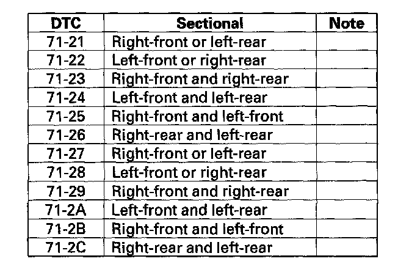

DTC 71-23
DTC 71-21: Right-front or Left-rear Different Diameter Tire MalfunctionDTC 71-22: Left-front or Right-rear Different Diameter Tire Malfunction
DTC 71-23: Right-front and Right-rear Different Diameter Tire Malfunction
DTC 71-24: Left-front and Left-rear Different Diameter Tire Malfunction
DTC 71-25: Right-front and Left-front Different Diameter Tire Malfunction
DTC 71-26: Right-rear and Left-rear Different Diameter Tire Malfunction
DTC 71-27: Right-front or Left-rear Different Diameter Tire Malfunction
DTC 71-28: Left-front or Right-rear Different Diameter Tire Malfunction
DTC 71-29: Right-front and Right-rear Different Diameter Tire Malfunction
DTC 71-2A: Left-front and Left-rear Different Diameter Tire Malfunction
DTC 71-2B: Right-front and Left-front Different Diameter Tire Malfunction
DTC 71-2C: Right-rear and Left-rear Different Diameter Tire Malfunction
NOTE: The DTC will be indicated when the vehicle has a different diameter tire(s) compared to the other tire(s).

1. Check the tires for proper inflation.
2. Turn the ignition switch ON (II).
3. Clear the DTC with the HDS.
4. Turn the ignition switch OFF.
5. Test-drive the vehicle.
6. Check for DTCs with the HDS.
Is DTC 71-21, 71-22, 71-23, 71-24, 71-25, 71-26, 71-27, 71-28, 71-29, 71-2A, 71-2B, or 71-2C indicated?
YES - Replace all four tires with the proper size.
NO - Intermittent failure, the system is OK at this time.